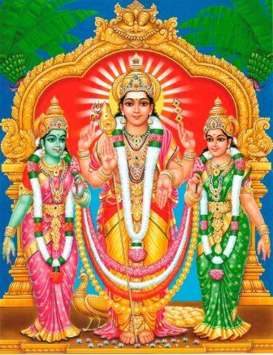
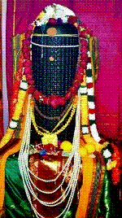
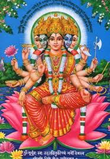
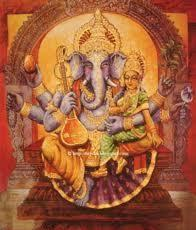
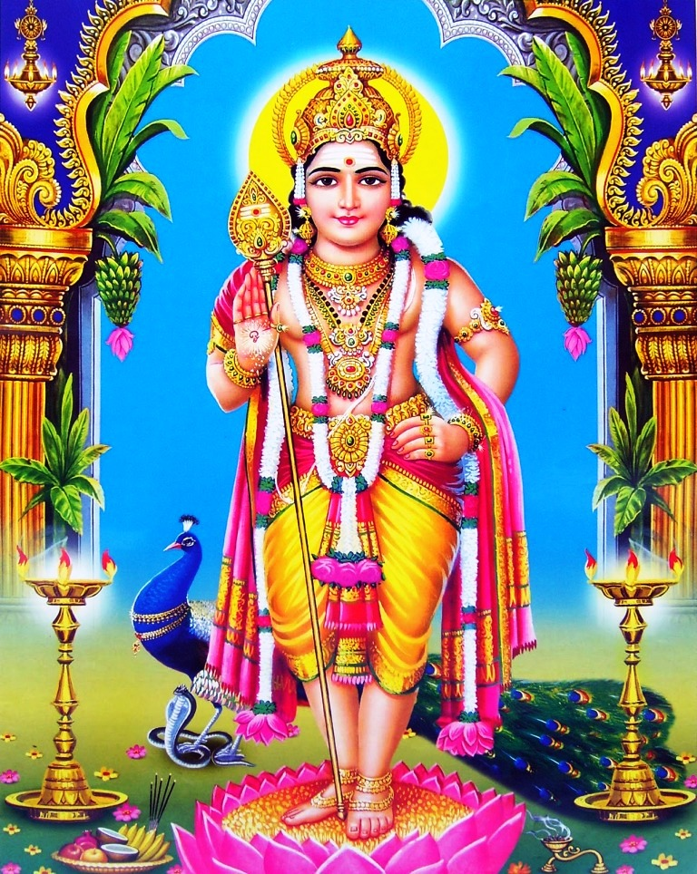
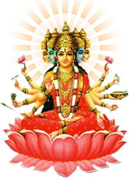
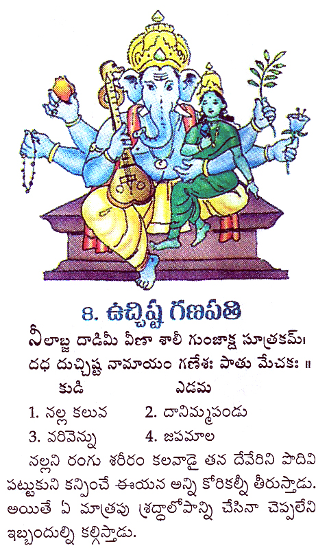

September 21 - September 29, 2017
Sharada Navarathri (Dusshera)
Sharada Navarathri is performed for nine days in which God is worshiped in the form of Mother. During this period, Durga, Lakshmi and Saraswati are worshipped as three different manifestations of Shakti or Cosmic energy, every day Chathushasti (64) Upachara pooja is performed with the respective homas, Sapthasathi paarayanam is conducted towards the end of the navarathri pooja and concluded with Anna Daanam.
Significance of performing Sharada Navarathri Pooja?
Every day there are two time periods that are ideal for upasana (spiritual practice), first being Bramhi Kaalam (early morning between 4 - 5 Am, just before sunrise) and second is Pradosha Kaalam (evening 5 - 6 Pm, just before sunset). During these time periods the mind can be put under control easily, during other times of the day, we are under the control of our minds :-). The significance of performing Sharada Navaratri pooja is that during these nine days unlike the other days in the year, the mind can be easily put under control through out the day. How is this possible ? If you consider one month in a year as an hour of a day then the month when Dusshera is performed would fall under Bramhi Kaalam of that day. By performing the pooja during those days, Goddess Sharada will help us control our mind and in turn control our Ego & Pride.
May 20 - May 23, 2015
Temples 6th Anniversary
Valli and Devasena Vigraha Prathistha

As part of Hemadurga temples 6th anniversary (shashtama vaarshikotshvam) we are performing various poojas and havanams like Ganapathi Upanishad Havanamu, Lakshmi Ganapathi Havanamu, Rudra and Chandi Havanamu.
This year we are perfoming the prathista of Valli and Devasena near Subrhamnya swami.
Listed below are the details of the program
| 7:00 Am on words |
Shri Vighneshawara Pooja |
| Swasthi Vachanamau |
| Punyha Vachanamu |
| Ankuraropanamu |
| Panchagavya Prasana |
| Deeksha Dharana |
| Goo Maata Puja |
| Akhanda Deepa Sthapana |
| Agni Prathista |
| Lakshmi Ganapathi Havanamu |
| Harathi, Mantra Pushpam, Theertha Prasad Vitarana |
| 6:00 Pm on words |
Mandala Upacharamulu |
| Jaladhi Panchaamrutha vaasam |
| Shayya Adhivasamu |
| Nidra Kalasha Sthapana |
| Shri Vishnu Sahasranaama Archana |
| Harathi, Mantra Pushpam, Theertha Prasad Vitarana |
| 7:00 Am on words |
Mantapa Devatha Pooja |
| Ganapathi Upanishad Havanamu |
| Harathi, Mantra Pushpam, Theertha Prasad Vitarana |
| 6:00 Pm on words |
Shri BalaTripuraSundari Trishathi naama Kunkuma Archana |
| Dhanyadhi Vaasamu |
| Shayyadhi Vaasamu |
| Pushpaadhi Vaasamu |
| Adhivaasanga Homamu |
| Harathi, Mantra Pushpam, Theertha Prasad Vitarana |
| 7:00 Am on words |
Lakshmi Ganapathi Moola Mantra Havanamu |
| Valli and Devasena Vigraha Prathista |
| Harathi, Mantra Pushpam, Theertha Prasad Vitarana |
| 6:00 Pm on words |
Shri Lalitha Sahasranaama Kunkuma Archana |
| Harathi, Mantra Pushpam, Theertha Prasad Vitarana |
| 7:00 Am on words |
Shri Chandi Havanamu |
| Rudra Havanamu |
| Saarva Devatha Moola Manthra Havanamulu |
| Maha Poorna Aaahuthi |
| Deeksha Vimochanam |
| Harathi, Mantra Pushpam, Theertha Prasad Vitarana |
| 1:00 Pm on words |
Anna Prasadam/Santarpana |
|
February 13,2014
Shri Dattareya, SaiBaba Vigraha Prathista - Shikara Prathista & Maha Kumbhabhishekam


Maha Kumbhabhishekam
Kumbhabhishekam is a milestone in the lifetime of any Hindu Temple, it is believed to homogenize, synergize and enhances the mystic powers of the deity.
Kumbha means the Head and denotes the Shikhara or Crown of the Temple (usually in the Gopuram) and Abhishekam is ritual bathing, (hence the term Kumbha + Abhishekam). This important activity has been prescribed by the Agama Sastras to be conducted every tweleve years. Observance of and participation in a Kumbhabhishekam have been equated with visiting and worshiping at a Temple for several hundred years.
The energies of the installed Dieties are temporarily transferred to the main Kalashas in an elaborate ritual. Pujas and Homas are performed to sanctify the holy water in the Kalashas representing the invocation of the energy and the renewal of the energy contained within.
Divine Power is transferred back to the deities by performing an abhishekam (salutary bathing) to the Vigrahas and Vimanas (pinnacles) on the roof with the sanctified holy waters from the kalasas accompanied by Vedic chanting and special rites. On that day at the designated auspicious time, when the Kumbha is bathed with the charged and sanctified holy waters contained in the sacrificial pots, consecrated and sanctified pranic powers trickle down a silver wire and enter the Deity installed inside the Sanctum Sanctorum of the Temple.
After the consecration of the Vimanas on top of the Temple, worship is then specifically performed inside the Sanctum Sanctorum in which further pranic powers are transferred to the Deities
This grand ceremony is being performed for the first time in this temple since the inception, this completes the tranformation of temple giving its dieties full power to protect dharma.
Listed below are the details of the program. Telugu broucher can be downloaded
here
| 4:30 Pm on words |
Shri Vighneshawara Pooja |
| Swasthi Vachanamau |
| Punyha Vachanamu |
| Ankuraropanamu |
| Panchagavya Prasana |
| Deeksha Dharana |
| Goo Maata Puja |
| Akhanda Deepa Sthapana |
| Udaka Shanti |
| Harathi, Mantra Pushpam, Theertha Prasad Vitarana |
| 7:00 Am –on words |
Veda Parayanam |
| Lakshmi Ganapathi Anustanam |
| Sarva Devatha Moola Mantra Anusthanamu |
| Yogini, Vassthu, Kshetra palaka, Navagraha, Sarvathabhadra Mandala Pooja |
| Sarva Devatha Avvahanam |
| Archana Upacharamulu |
| Agni Prathista |
| Samuhika Lakshmi Ganapathi Havanamu |
| Chatushasta Upachara Pooja |
| Harathi, Mantra Pushpam, Theertha Prasad Vitarana |
| 4:00 Pm on words |
Mandala Upacharamulu |
| Stapitha Devatha Homamu |
| Jaladhi Panchamaamrutha vaasam |
| Mangala Haarathi |
| Mantra Pushpam |
| Shayya Adhivasamu |
| Nidra Kalasha Sthapana |
| Adhivassanga Hoomamu |
| Harathi, Mantra Pushpam, Theertha Prasad Vitarana |
| 7:00 Am on words |
Veda Parayanam |
| Chatushasti Upachara Pooja |
| Chandi Sapthasathi Parayanam |
| Sri Maha Vidya Parayanam |
| Sri Guru Charithra Parayanam |
| Sthapitha Devatha Pooja |
| Lalitha Kumkumarachana |
| Adhivasanga Homamu |
| Sri Chandi Sapthasathi Homamu |
| Harathi, Mantra Pushpam, Theertha Prasad Vitarana |
| 4:00 Pm on words |
Shri Rudra Havanamu |
| Shri Maha Vidya Havanamu |
| Dhanyadhi Vaasamu |
| Shayyadhi Vaasamu |
| Pushpaadhi Vaasamu |
| Adhivaasanga Homamu |
| Harathi, Mantra Pushpam, Theertha Prasad Vitarana |
| 6:00 Am on words |
Veda Parayanam |
| Mandapa Pooja |
| Moola Mantra Homamulu |
| Shri Guru Dattha Homamu |
| Sri Gurupooja Mahostavam |
| Kalanyasa Hoamamu |
| Gartha Nyasamau |
From 11: 11 Am on words
Pujya Guruji to perform:
- Shri Dattatrey Prathista
- Shri SaiBaba Prathista
- Shikara Prathista
- KumbhAbhishekam |
Yanntra Prathista |
| Shri Dattatrey & Sai Baba Vigraha Prathista |
| Shikara Prathista & Maha Kumbhabhishekam |
| Netra Unmelanamu |
| Devatha Darshnam |
| Archana |
| Maha PoornaAhuthi |
Pravachanam by Pujya Guruji
Shri Shri Shri Madhavananda Saraswathi garu |
| Ashirwarchanam by pujya Guruji |
| Panditha Satkaram |
| Deeksha Vimochanam |
| Harathi, Mantra Pushpam, Theertha Prasad Vitarana |
| 1:00 Pm on words |
Anna Prasadam/Santarpana |
|
June 13 - 15, 2012
Sahasra Linga, Gayathri, Uchista Ganapathi & Subrahmanya Swami Prathista.
For the third anniversary between June 13 - 15, we are performing the prathista of Sahasra Linga, Goddess Gayathri , Uchista Ganapathi & Subrahmanya swami.





Gayathri Devi symbolises the "shakti" (strength) and "dev" (quality) of Knowledge, Purity and Virtue. Gayatri Devi is believed to have given the four Vedas to mankind. Gayatri is depicted seated on a lotus. She is depicted with five faces representing the pancha pranas /pancha vayus(five lives/winds): prana, apana,vyana, udana, samana, of the five principles/ elements (pancha tatwas) earth, water, air, fire, sky (prithvi, jala, vayu, teja, aakasha). She has 10 hands carrying the five ayudhas: shankha; chakra, kamala, varada, abhaya, kasha, ankusha, ujjwala utensil, rudrakshi mala.
Gayatri mantra In Sanskrit, there are definite rules that regulate poetry: rhyme and meter are not written whimsically. The Gayatri Mantra has a Vedic metre of 24 syllables. Amongst the regulated poetry, the Gayatri mantra, chanted by properly qualified persons, is the most prominent. The Gayatri mantra is mentioned in the Srimad Bhagavatam. Great sins are said to be expiated by a pious recitation of this Gayatri verse which reads as follows:
Om bhoor bhuvah svaha,
Tat Savitur varenyam,
Bhargo devasya dheemahi,
Dheeyo yonah prachodayat.
Gayatri mantra is meant for realization of God and is regarded as representing the Supreme Lord. It is meant for spiritually advanced people. Success in chanting it enables one to enter the transcendental position of the Lord. But, in order to chant the Gayatri mantra, it is necessary for one to first acquire the qualities of the perfectly balanced person in terms of the qualities of goodness according to the laws of material nature.

Ucchista Ganapathi is a very rare form of Ganesha and is also included in the 32 forms of Ganapathy. This form of Ganesh is worshipped for protection and also for getting control over the five senses. Ucchishta Ganapati Mantra is
Neelabja dadaimee veena shali gujaksha sutrakam
Dadahduchishta namamya ganeshah paadu mechakah!
Ucchishta Ganapati depicted in deep blue color. He has six hands and holds a pomegranate fruit, veena, flower, paddy, Rudraksha mala and noose. A Goddess sits on his left lap. The popular belief is that propitiating this form Ganesha will help in control of the five senses and which in return will help in attaining peace and prosperity.
Updqate on other deities to follow soon....